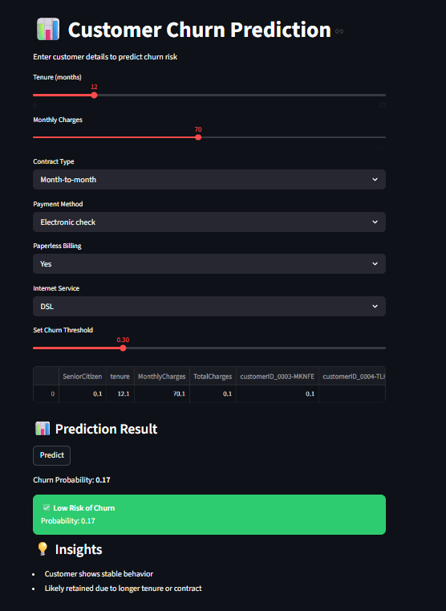

Projects
MetroEye - Crowd Monitoring
Real-time metro crowd detection using Computer Vision and Streamlit dashboard. Improved monitoring efficiency using AI-based analysis.

Customer Churn Prediction
Built ML model using Logistic Regression with optimized threshold. Improved recall for business-critical predictions.
